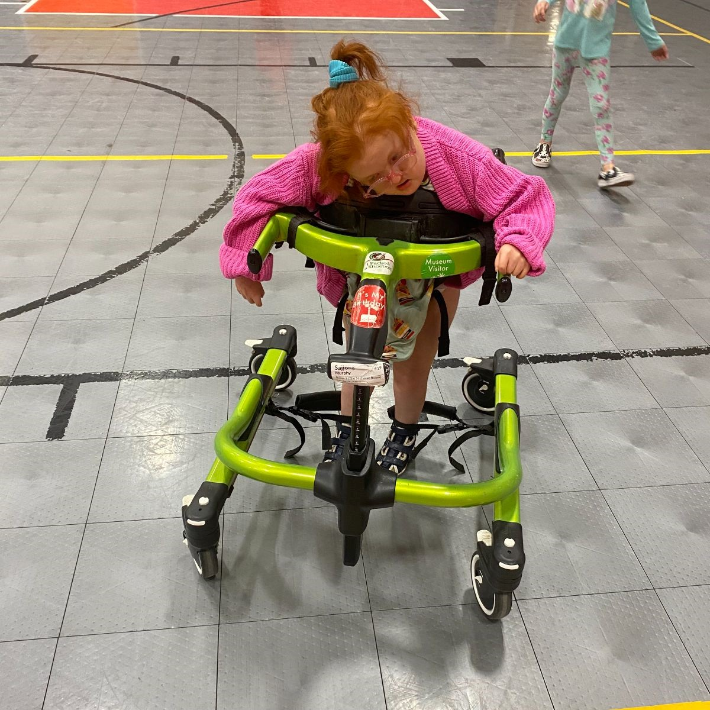
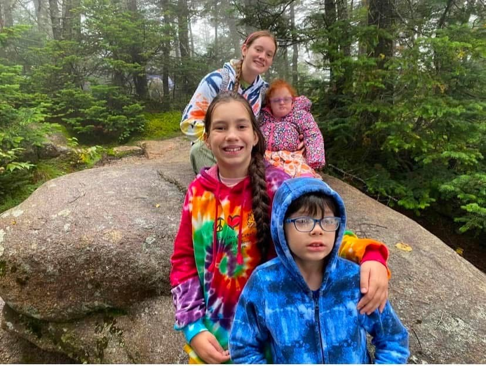
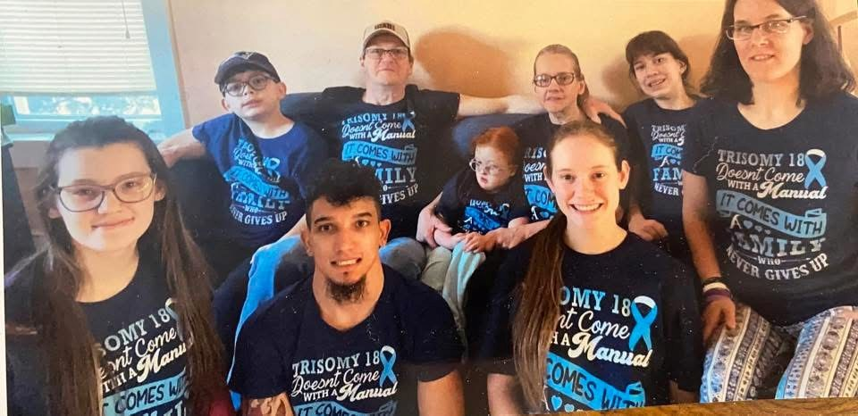

Meet Massachusetts Homeschoolers: Sajjona's Story

by Heidi Murphy
Meeting Sajjona
Parenting does not come with a manual. Everything parents experience is a learning process with their child. There will be bumps along the way. Yet, the child grows and develops, and as a parent one enjoys every moment and every adventure. However, having a child with unique needs and a life-threatening illness has parents navigating like a private investigator. Being heartbroken and loving your child at the same time is like being on a roller coaster ride of emotions. We were told our child had been born with a rare medical condition called Trisomy 18. She was deemed “incompatible with life.” We were told by the geneticist, “She will live two weeks if you are lucky.” We relied heavily upon our faith in God. This trust in Him got us through our darkest days. Weeks turned into months and months turned into years. Sajjona Murphy is now seven-and-a-half years old and not just surviving—she is thriving.
Fighting for Services
We adventured through early intervention and we were told she should go to public school. Having homeschooled five other children, I turned down the public school. The reasons to homeschool Sajjona were even more complex than for my other children. School is a germ pool, and even the slightest cold could cause her to end up with pneumonia and death could result. Knowing her to be medically fragile, I knew she needed to be homeschooled to protect her health and ultimately to save her life. We received some services through the public preschool. We loved our therapists; they were amazing. Yet, the challenges were the meetings and the facilitator. So I advocated to acquire a letter of necessity from our complex care service. This helped us out a ton. With Covid and Zoom meetings we took a break from the school and did our own thing. Zooms for Sajjona simply were not working as she has mild hearing loss and cortical vision impairment. In person was the best way for Sajjona to learn. So from here on out I would never do Zoom for Sajjona again. It was exhausting for her and our family.
Fast forward to her being four-and-a-half. I started doing some research to get therapy services from the school once again. I was told, “You are making the choice to homeschool so you can’t get services.” Something felt wrong about this statement. It took me a year to figure it all out. We finally got counsel that: “You do not have to have her enrolled in public school in order to get services through the school. She can be an ‹unenrolled student, homeschooled› and still receive services.” So ta-da! Finally we had our answer! So the advocating began and, yes, I did push hard. I brought up the laws and Sajjona’s rights.
Then we were told at age five-and-a-half, “You never did an education plan or submitted that she’s homeschooled.” I took some laws from the AHEM site and showed them that we did not need to report until age six. The thing to remember is that public schools do not necessarily know the homeschool laws. They are not diligent in keeping track of them. As a parent you must know or find the laws yourself to be the best advocate you can.
Sajjona began receiving services through the school as a homeschooled student at age five and is now seven-and-a-half years old. She receives physical therapy, occupational therapy, and speech therapy and has a special education teacher. Yes, you can homeschool your child and receive services.
|  |  |
Homeschooling Sajjona
We use a multimodal method as Sajjona is a multifaceted learner. She uses videos, preschool curriculum websites, art, music, and reading books. She is involved in 4H club, homeschool club, church, and family activities. Much of her learning is hands-on. Her favorite experience was going to the top of Cannon Mountain. Just because you have a child with unique needs does not mean you don’t know how to homeschool them. You are their parent and you know what works best for them and can provide the love and care they need. Every child has their own set of footprints and we need to do trial and error to see how they learn best. Sajjona is a hard worker and loves to learn. We are happy with our choice to homeschool her. They tried to make us come to the school and when we asked if they were willing to buy medical equipment for her and feed her every hour with g-tube they agreed that the school environment is not in Sajjona’s best interest. In my opinion every child, no matter their needs, can be homeschooled. All it takes is love, persistence, and being able to change your way of teaching to fit your child.
